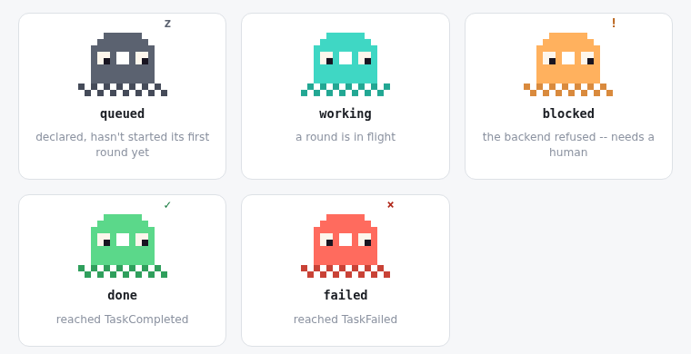

Register your software projects, name a small team of agents for each one, and direct all of it from one dashboard — durably, resumably, remotely.
git clone https://github.com/leejianrong/cuttlefish-crew.git && cd cuttlefish-crew && uv sync
No org chart. No hiring workflow. No performance reviews. Just a handful of named agents, each with its own job, directed from one place.
So does every role in your crew — a role's status is always one glance away, never a log file you have to go dig through.

The core loop is a durable workflow from the first commit that runs a task — kill the process mid-run, restart it, and it resumes exactly where it left off.
Delegate real coding work to kopicode, headless Claude Code, or headless Codex — your choice per project, not locked to one vendor's coding tool.
Register 10 projects or 100. Watch every crew's status, steer a role mid-task, or require your sign-off before a round finishes — all from one screen.
uv run cuttlefish run "add a .gitignore entry"